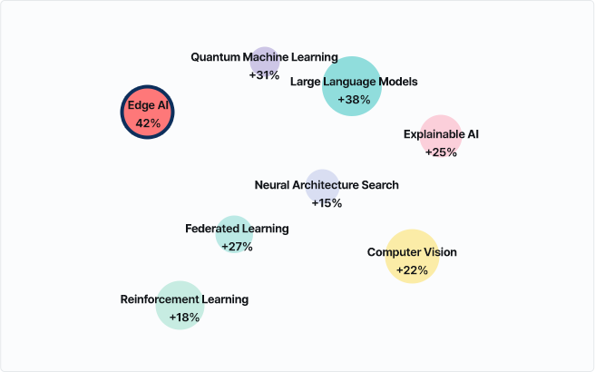

Machine Learning은 인공지능의 한 분야로, 컴퓨터가 명시적으로 프로그래밍되지 않고도 데이터로부터 학습하고 개선할 수 있도록 하는 기술입니다. 패턴 인식, 예측 모델링, 자연어 처리 등 다양한 응용 분야에서 활용되며,
최근 딥러닝의 발전으로 급속도로 성장하고 있는 연구 분야입니다.
선택한 연구 주제가 다른 분야와 어떤 방식으로 연결되어 있는지를 보여주는 시각 분석 페이지입니다.
주제 간 관계도, 핵심 키워드, 주요 연구자 정보를 통해 연구 간 연결 구조와 협력 네트워크를 파악할 수 있습니다.
AI 연구 트렌드 맵
버블크기 = 논문 수
색상 = 최근 성장률
거리 = 주제 유사도

버블을 클릭하면 오른쪽의 예측 키워드 정보가 갱신됩니다.
예측 키워드 테이블
선택된 주제 :
Large Language Models
2024 기준
순위
키워드
2024 빈도
2022-2024 성장률
연구 집중도
1
TinyML
512
+ 28%
44%
2
Model Compression
512
+ 28%
44%
3
TinyML
512
+ 28%
44%
4
TinyML
512
+ 28%
44%
5
TinyML
512
+ 28%
44%
TinyML과 On-device Learning 키워드의 동시 출현 빈도가 증가하며, 경량화·엣지 디바이스 기반 AI 연구가 빠르게 확대되고 있습니다.
AI 예측 결과 요약
AI 기반 분석 모델이 2022-2024년 논문 데이터와 인용 네트워크를 학습하여 2025년 주요 성장 주제를 예측한 결과입니다. 각 항목은 성장률뿐 아니라 핵심 기술 키워드, 연구 방향, 대표 기관 동향을 함께 제시합니다.
2025년까지 Edge AI와 Large Language Models가 가장 빠른 성장세를 보일 것으로 예측됩니다.
특히 Edge AI는 저전력·온디바이스 환경에서의 실시간 학습 모델로, LLM은 멀티모달 확장과 경량화 연구 중심으로 급격한 변화를 보일 것으로 전망됩니다.
Edge AI
+42%
핵심 키워드
TinyML, Quantization, Model Compression
연구 방향
온디바이스 학습 효율 개선과 경량화 기술 발전,
딥러닝 전용 하드웨어와의 통합 연구 확대
주요 기관
KAIST, Stanford, Tsinghua Univ.
AI 요약
실시간 처리와 에너지 효율을 동시에 요구하는 분야
중심으로 연구가 확장되고 있습니다.
Large Language Models
+42%
핵심 키워드
TinyML, Quantization, Model Compression
연구 방향
온디바이스 학습 효율 개선과 경량화 기술 발전,
딥러닝 전용 하드웨어와의 통합 연구 확대
주요 기관
KAIST, Stanford, Tsinghua Univ.
AI 요약
실시간 처리와 에너지 효율을 동시에 요구하는 분야
중심으로 연구가 확장되고 있습니다.
Federated Learning
+27%
핵심 키워드
TinyML, Quantization, Model Compression
연구 방향
온디바이스 학습 효율 개선과 경량화 기술 발전,
딥러닝 전용 하드웨어와의 통합 연구 확대
주요 기관
KAIST, Stanford, Tsinghua Univ.
AI 요약
실시간 처리와 에너지 효율을 동시에 요구하는 분야
중심으로 연구가 확장되고 있습니다.
※ 예측 결과는 최근 3년간(2022-2024) 논문 및 인용 데이터를 기반으로 한 AI 추론 모델을 통해 산출되었습니다.